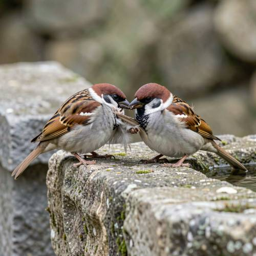
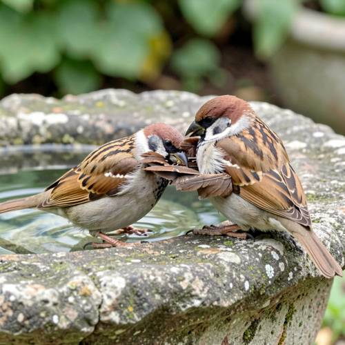
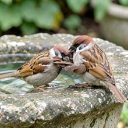
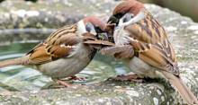

Attribute — Generating picture: Two sparrows are next to each other on the edge of
Generating picture: Two sparrows are next to each other on the edge of a rough stone drinking basin, one of them sorting feathers on the other wing with its beak.

Direct — one call, no iteration

Continuum — Qwen3.8-27B + FLUX.2-klein-9B
Judge — Direct
PASSAttribute - Material — The image shows two sparrows perched on the edge of a stone structure. The stone has an uneven, pitted, and weathered surface with some moss growing on it, which aligns with the description of 'rough stone'. There is also water visible to the right, indicating it is a drinking basin.
PASSAttribute - Quantity — The image clearly depicts two birds with markings consistent with sparrows, satisfying the quantity requirement.
FAILAction - Contact Interaction — The two sparrows are facing each other. There is a clump of feathers between them, with each bird's beak touching the feathers. However, one sparrow is not sorting the feathers on the other's wing. Instead, they appear to be interacting with a loose feather or feathers held between them.
Judge — Continuum
PASSAttribute - Material — The image shows a drinking basin made of stone. The surface of the stone is uneven, weathered, and covered in small patches of moss or lichen, matching the description of a 'rough stone' basin.
PASSAttribute - Quantity — The image clearly depicts two birds with the distinct markings of sparrows, fulfilling the 'Two sparrows' quantity requirement.
PASSAction - Contact Interaction — The image captures a clear interaction between the two sparrows. The sparrow on the left has its beak buried in the wing feathers of the sparrow on the right, accurately portraying the action of one bird sorting the feathers on the other's wing.
What the agent did
Thinking
Let me think about this prompt. "Two sparrows are next to each other on the rim of a rough stone water basin, and one of them is preening the other's wing feathers with its beak." Wait — "one of them is preening the other's wing feathers with its beak" — hmm, it's "preening the other's wing feathers." Actually, it might mean that one is preening its own feathers... let me reread: "one of them is preening the other's wing feathers with its beak" — so one sparrow is preening the feathers of the other sparrow's wing with its beak. That's allopreening (mutual preening). So the scene is: a rough stone water basin (a water trough), with two sparrows perched next to each other on the rim, and one preening the other's wing feathers with its beak. Let me generate this with flux2-klein. I'll fill in visual details: small brown sparrows, one with its beak at the other's folded wing feathers, a rough weathered stone basin containing water, soft natural light, etc. First let me generate the image.
Step 1 — `generate_image`
{
"prompt": "Two small sparrows perched next to each other on the rim of a rough, weathered stone drinking basin filled with clear water. One sparrow leans over and is preening the folded wing feathers of the other sparrow with its beak, beak buried in the brown and chestnut wing plumage. The other sparrow sits calmly, head slightly turned. Natural outdoor garden light, soft daylight, shallow depth of field, detailed feathers, earthy tones of tan, brown, grey and mossy green on the stone.",
"model": "flux2-klein"
}
Result img_0

Thinking
The image came out really well. Two sparrows are perched side by side on the edge of a rough stone basin. The left sparrow has its beak in the right sparrow's wing feathers, preening its feathers. This matches the prompt. Let me check a few details. Let me look more closely. The left sparrow's beak is at the position of the other sparrow's wing. It looks like it's preening the feathers of the other's wing. Good. The basin is a rough stone one. Good. Two sparrows side by side. Good. Let me zoom in to confirm that the beak is in the feathers, and that there are no weird artifacts.
Step 2 — `inspect_region`
{
"image": "img_0",
"roi": "the left sparrow's head and beak at the other sparrow's wing"
}
Result img_1

Thinking
In the cropped image, the left sparrow is preening the feathers of the right sparrow's wing with its beak — it's clearly grasping a long feather. The right sparrow is holding its wing open / extended, showing the feathers. This is a very faithful rendering of the prompt. Everything matches: - Two sparrows ✓ - Side by side ✓ - On the edge of a rough stone water basin ✓ (the mossy, rough, weathered stone edge is visible, with water in the background) - One of them is preening the other's wing feathers with its beak ✓ (the left bird has its beak buried in the right bird's wing feathers, and a long feather can be seen) This is a good result. Let's mark this as the best.
Model
This is a faithful match. Two sparrows are perched side by side on the edge of a rough, moss-covered stone basin, and the sparrow on the left has its beak buried in the wing feathers of the sparrow on the right — clearly preening it, with the long brown feathers of the wing extended outward. All the elements of the prompt are present, and the rendering is also clean.
Step 3 — `mark_best`
{
"image": "img_0",
"reason": "Both sparrows perched on the rough stone basin rim, one clearly preening the other's wing feathers with its beak; all prompt elements present and well rendered."
}
Thinking
The image has been marked as the best. The task is complete. The image matches the prompt perfectly. Stopping here.
Model
Done. The image shows two sparrows side by side on the edge of a rough, mossy stone drinking basin, with the left sparrow preening the right sparrow's wing feathers with its beak — exactly as requested. Marked as the best result and ready to submit.